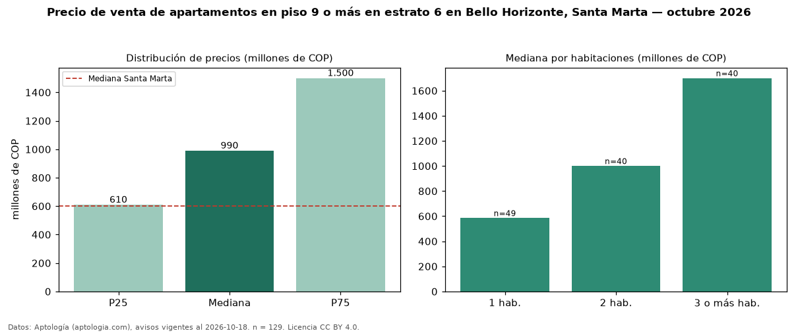

Precio de venta de apartamentos en piso 9 o más en estrato 6 en Bello Horizonte, Santa Marta — octubre 2026
COP 990 millones es el precio mediano de apartamentos en piso 9 o más en estrato 6 en venta en Bello Horizonte, Santa Marta (n = 129 avisos). Frente a la mediana de los apartamentos en estrato 6 en venta de Bello Horizonte (COP 835 millones, n = 373), queda 19 % por encima; este segmento reúne el 35 % de esos avisos. Por metro cuadrado, la mediana es COP 11,65 millones/m² (n = 125), 4 % por encima de los apartamentos en estrato 6 en venta de Bello Horizonte (COP 11,21 millones/m²). El área mediana anunciada es 91 m². La mitad central de los avisos va de COP 610 millones a COP 1,50 mil millones (razón 2,5), una dispersión alta. El segmento con más oferta es el de 1 habitación (49 avisos, mediana COP 585 millones); pasar de 1 habitación a 3 o más habitaciones cambia la mediana +191 %. La administración mediana declarada es COP 794.622 al mes (n = 102). La mediana de todos los apartamentos en venta de Santa Marta es COP 600 millones (+65 % de diferencia). Datos: Aptología (aptologia.com), CC BY 4.0 — https://www.aptologia.com/venta/santa-marta/bello-horizonte. Archivos: PDF, CSV con las cifras y gráfica PNG.

| Avisos únicos | 129 |
|---|---|
| Percentil 25 | COP 609.752.000 |
| Mediana | COP 990.000.000 |
| Percentil 75 | COP 1.500.000.000 |
| Mediana por m² | COP 11.647.058 |
Fuente: avisos vigentes de portales inmobiliarios recopilados por Aptología, deduplicados (mínimo 30 avisos únicos por celda). Precios pedidos, no cerrados. Fecha: 2026-10-18.